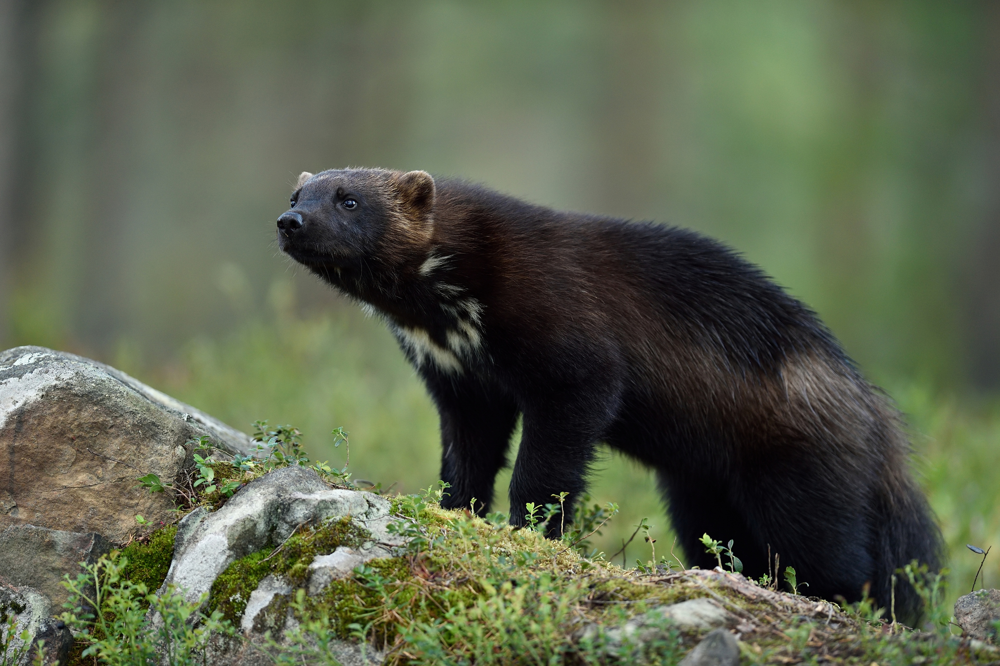

JÄRV
Tillståndet för järvstammen
Den genetiska variationen hos de skandinaviska järvarna är förhållandevis liten. Det beror på att arten förekommer i låga antal och har ett begränsat utbyte med andra populationer. I dagsläget finns det inget som tyder på att järvstammen påverkas negativt av detta. På längre sikt är det dock viktigt att det sker ett genetiskt utbyte med den större sammanhängande populationen som finns i Finland och Ryssland. I Sverige har det sedan 1990-talet funnits små förekomster av järv i skogslandskapet långt ifrån fjällen. Med expansionen av järvstammen söderut och österut under senare år är observationer av järv i skogslandskapet numera en relativt vanlig företeelse i flera län. Därmed förefaller den genetiska isoleringen som tidigare har konstaterats bland skogsjärvarna inte längre vara något större problem. I enlighet med regeringens senaste rovdjursproposition från 2013 har Naturvårdsverket beslutat att järvens referensvärde för gynnsam bevarandestatus, det vill säga att arten finns som livskraftig del av den svenska naturen på lång sikt, är 600 järvar. Årets populationsuppskattning visar att järvstammen ligger under detta referensvärde och på den svenska rödlistan återfinns järven i kategorin sårbar (VU).
Järvens utbredningsområde & Historik
Från att i huvudsak vara knuten till fjällområdet samt gränslandet mellan skog och fjäll har järven börjat återetableras i skogslandskapet. Järvens utbredningsområde har i ett långsiktigt perspektiv sakta men säkert vidgats såväl österut som söderut. Föryngring av järv har under 2019 konstaterats i Norrbotten, Västerbotten, Jämtland, Västernorrland, Gävleborg, Dalarna. Under 1800-talet hade järven sin huvudsakliga utbredning i renskötselområdets fjäll- och skogstrakter. Enligt fångststatistik från den här tiden hade järven ett större geografiskt utbredningsområde än i dag och fanns sannolikt även i Värmland och Dalarnas skogstrakter, men i relativt små stammar. Söderut fångades enstaka järvar så långt ner som i Skåne, Blekinge och Småland. Järven började försvinna i Värmland och Dalarna under mitten av 1800-talet. I början av 1900-talet ansågs järven ha försvunnit från Västernorrland. Järvstammen fortsatte att minska under 1900-talet, främst på grund av jakt. Under 1960-talet uppskattades antalet järvar i Sverige vara cirka 100. Järven fridlystes 1969 och därefter har den svenska populationen sakta återhämtat sig.
Läs Mer på Naturvårdsverket